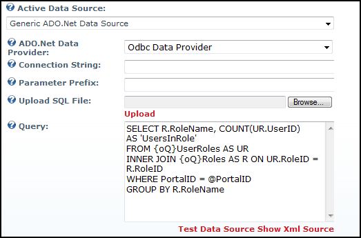

Setting the Generic ADO.Net Data Source
The Generic ADO.Net Data Source allows you to execute queries against any data source supported by ADO.Net. ADO.Net providers are provided for Oracle, OLE DB, ODBC and SQL Server as part of the ASP.Net environment. Additional providers can be downloaded and installed for many other databases, including MySQL (see http://dev.mysql.com/downloads/connector/net/5.0.html) , IBM DB2 (see http://www-306.ibm.com/software/data/db2/windows/dotnet.html) and others. However, unlike the Microsoft SQL Server Data Source, you must manually enter a Connection String since each database provider has its own format for these strings. There are many resources on the web, such as http://www.connectionstrings.com, which can help you build these connection strings. Note: This Data Source does not support the "{oQ}" and "{dO}" tokens since it is assumed you are using it to query databases which are not related to DNN.
Here's how to configure the Generic ADO.Net Data Source:
-
- Select the Report Settings tab.
- Go to the Data Source Settings section.
- In the Title text box, enter a title for the report.
- Optional. In the Description text box, enter a description of the report.
- At Active Data Source, select Generic ADO.Net Data Source. This displays the following settings:
- At ADO.Net Data Provider, select a data provider from a list of installed ADO.Net data providers (Odbc Data Provider, OleDb Data Provider, OracleClient Data Provider, SqlClient Data Provider).
- In the Connection String text box, enter a complete ADO.Net Connection String for connecting to the data source.
- In the Parameter Prefix text box, enter a parameter prefix - OR - Leave this field blank as required. See the section on Parameters below for more details.
- Select one of the following options:
- At Upload SQL File, select the file on your local machine and it will be uploaded and placed in the Query text box. NOTE: You must still click Update at the bottom of the page to save the query.
- In the Query text box, enter the SQL Query to execute on the database.
- Optional. Click the Test Data Source link to test your data source.
- Optional. Click the Hide Results link to hide the test results.
- Optional. Click the Show Xml Source link view the Xml of your data source.
- Optional. Click the Hide Xml Source link to hide the source.
-
Click the OK button to confirm.
Tip: Both the Title and the Description are displayed on the module when Show Info Pane is checked. The title and description are exported with the report when Export Content is selected from the module actions menu.
Parameters: The Generic ADO.Net Data Source supports four parameters listed in the "Parameterized Queries" tutorial.). However, since different database provider support parameters in different ways, there are a few caveats:
- They cannot be used with Data Sources such as Microsoft Access which do not support named parameters.
- If the data source expects parameter names to start with a specific prefix (for example, SQL Server requires they be prefixed with the "@" character), that prefix must be entered in the Parameter Prefix setting.
- They cannot be used with Data Sources that expect parameter names to end with a specific suffix.

Setting the Generic ADO.Net Data Source